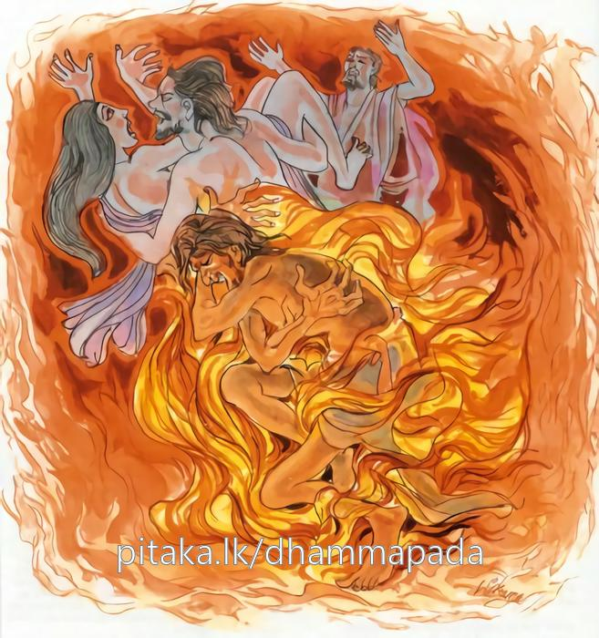

10-6 අජගර නම් ප්රේතයාගේ කථා පුවත.
මෙම කතාව සද්ධර්ම සාගරයෙන් ද කියවන්න.
අථ පාපානි කම්මානි කරං බාලො න බුජ්ඣති
සෙහි කම්මෙහි දුම්මෙධො අග්ගිදඩ්ඪො’ව තප්පති.
ඒ මතු නො වෙයි. ප්රාණවධාදී පව් කම් කරණ අඥාන තෙම(මා විසින් කරණ ලද මේ පාපකර්මයාගේ මෙසේ වූ අනිෂ්ට විපාකයෙක් ඇතැ යි) නො දන්නේ ය (නො සලකන්නේ ය). ඒ නුවණ නැත්තේ ස්වකීය පාප කර්මයෙන් (නරකයෙහි උපන්නේ) ගින්නෙන් දැවුනක්හු මෙන් (කායික චෛතසික සන්තාපයෙන්) තැවෙන්නේ ය.

“අථ - පාපානි කම්මානි ” - යන මේ ධර්මදේශනය ශාස්තෲන් වහන්සේ රජගහනුවර වේළුවනයෙහි වැඩ සිටියදී අජගර ප්රේතයෙකු නිමිති කරගෙන දේශනා කළහ.
එක් සමයෙක මහමුගලන් තෙරණුවෝ ලක්ඛණ තෙරුන් සමඟ ගිජුකුළු පව්වෙන් බසින විට දී යොදුන් විසිපහක් දිග පිඹුරු ප්රේතයෙක් දිවැසින් දුටුවහ. ඔහුගේ හිසෙන් ගිනිජාල නැගී කෙළවර පැතිරයයි අවසානයෙන් පටන්ගෙන හිස දක්වාත් ගමන්කරයි. දෙපසින් ගිනිජාලා ඇතිවී මැදට පැමිණේ. තෙරුන්වහන්සේ මේ දැක සිනා පහළ කළහ.
ලක්ඛණ තෙරුන් විසින් සිනා පහළ කිරීමට හේතු විමසා සිටි විට ඇවැත්නි ,එය විස්තර කිරීමට කාලය නොවේ. මේ ප්රශ්නයට පිළිතුරු බුදුරජාණන් වහන්සේ හමුවේදී මගෙන් විමසන්න යයි පැවසූහ. එසේ පවසා රජගහනුවර පිඬු පිණිස හැසිරී බුදුන් වෙත ගියවිට ලක්ඛණ තෙරුන් විසින් විමසන ලදුව මෙසේ පැවසූහ.
ඇවැත්නි එක් ප්රේතයෙක් දුටුවෙමි. ඔහුගේ මෙබඳු ආත්මභාවයක් විය. මම ඔහු දැක මවිසින් මෙබඳු ආත්මභාවයක් මෙයට පෙර නොදුටුවෙමියි මට සිනා පහළ විය. බුදුරජාණන් වහන්සේ ඇස් ඇති ශ්රාවකයින් (දිවැස්) වාසය කරත් යයි පවසා තෙරුන්ගේ කථාවේ පිහිටා මහණෙනි ! මවිසින් ද බෝධි මණ්ඩපයේදීම දුටුවේ වෙමි. මෙය නොපිළිගන්නා අයගේ අහිත පිණිස පවතී යයි සිතා නොපැවසීමි. දැන් මුගලන් ඇස් ලැබ කියමියි කියා භික්ෂූන් විසින් ඔහුගේ පෙර කර්මය විමසුවේ පැහැදිලි කර දුන්හ. කාශ්යප බුද්ධ කාලයේදී සුමංගල නම් සිටුවරයෙක් රන් ගඩොල් බිම අතුරා එකසිය විසි රියනක් දිගට එපමණ ධනයක් විසුරුවා මහා විහාරයක් කළේය. එපමණම වියදම්කර උත්සවයක් කළේය. ඔහු උදෙන්ම බුදුන් වෙත (කාශ්යප) යන්නේ නුවර දොරටුවේ එක් ශාලාවක කසාවතක් හිසට පෙරවාගෙන මඩ තැවරුණු පාදයෙන් යුතුව නිදාසිටි එක් සොරෙක් දැක. මඩතවරාගෙන රාත්රියේ ගමන්කර දවල් නිදන්නෙකැයි කීවේය. සොරා මුහුණ විවරකර සිටුතුමා දැක බලා - හොඳයි කරන්න ඕන දේ දැනගත්තායි වෛරයක් බැද හත්වරක් (සිටුතුමාගේ) කුඹුරට ගිනි තැබුවේය.
සත්වරක් ගවගාලේ ගවයින්ගේ පාසින්දේය සත් වතාවක් ගෙය දවාලීය. හේ මෙපමණකින්වත් කෝපය නිවාගන්නට අසමත් වන්නේ ඔහුගේ සුළු සේවකයා සමඟ මිත්රත්වයක් ඇති කරගෙන ඔබේ සිටුවරයාට වඩාත් ප්රිය දෙය කුමක්දැයි විමසා - බුදුන්ගේ ගඳකිළියට වඩා ප්රිය දෙයක් නැතැයි අසා එසේ වේවායි. ගඳකිළිය දවා කෝපය නිවාගනිමියි සිතා බුදුරජාණන් වහන්සේ පිඬුසිඟා වැඩිවිට - පානය හා පරිභෝගය සඳහා තිබුණ ජලය තිබූ කළ බිඳ දමා ගන්ධ කුටියට ගිනි තැබීය. සිටු තුමා ගඳකිළිය ගිනිගන්නේ යයි අසා ගිනි ඇවිලෙන විට ඇවිත් ගඳකිළියේ දැවෙන හැටි බලා කෙස් ගහක තරම්වත් දොම්නසක් ඇති කර නොගෙන වම් අත හකුළුවා දකුණතින් මහත් අත්පොළසන් දුනි. අනතුරුව ඔහු අසල සිටි අය මෙපමණ ධනයක් වැයකර කරන ලද ගඳකිළිය දැවෙද්දී සතුටු වෙන්නේදැයි විමසූහ.
දරුවනි මේ ගිනිවලට අසාධාරණ වූ බුදුසසුනේ ධනය නිධන් කිරීමට ලැබෙන හෙයින් නැවතද මෙබඳු ධනයක් වියදම්කර බුදුරදුන්ට ගඳකිළියක් කරන්නට ලබන්නෙමියි සතුටු සිත් ඇත්තේ අත්පොළසන් දුනිමි. පැවසුවේය. හේ නැවතද එබඳුම ධනයක් වැයකර ගඳකිළියක් කරවා විසිදහසක් භික්ෂූන් සහිත බුදුරදුන්ට දානයක් පිරිනැමුවේය.
මේ දුටු සොරා මම මොහු නොමරා නිහඬව කරවන්නට නොහැකි වේ යැයි සිතා මොහු මරන්නෙමියි ඉණෙහි කිනිසි බැඳ දින හතක් විහාරයේ හැසිරෙන්නේ ඉඩක් නොලැබුණි. මහසිටුවරයා ද දින හතක් මහදන් දී බුදුරජාණන් වහන්සේට නමස්කාර කොට ස්වාමීනි එක් පුරුෂයෙක් විසින් මගේත් සත්වරක් දවාලීය. ගවගාලේ ගවයින්ගේ පා හත්වරක් සිඳ දැම්මේය. සත්වරක් ගෙය දවාලීය. දැන් මේ ගඳකිළිය ද ඔහු විසින් දවන ලදී. මම මේ දානයේ පළමු කොටස ඔහුට දෙමි. එය අසා සොරා මවිසින් බැරෑරුම් ක්රියාවක් කරන ලද්දෙමි, මෙපමණ අපකාර කළේද මා කෙරෙහි කෝපමාත්රයක්වත් නැත. මේ මහා දානයේ ප්රථම කොටස මට දෙයි මම ද්රෝහියෙක්මි. මෙබඳු කෙනෙකුගෙන් ක්ෂමා නොගැනීම නිසා දේව දඬුවම්ද මගේ හිසමත පතිතවේයි සිතා සිටුවරයාගේ පාමුල වැටී ස්වාමීනි මට සමාවන්නැයි ඉල්ලා සිටිවිට මේ කුමක්දැයි සිටුවරයා විමසීය. මෙබඳු අයුතු දෙයක් මවිසින් කරන ලදිමි ඒ මට සමාවන්නැයි ඉල්ලා සිටියේය.
අනතුරුව සිටුවරයා මේ මේ දේත් කරන ලද්දේ නුඹ විසින් දැයි? විමසීය. සියල්ල විමසා - එසේය මා විසින් කරන ලදැයි පිළිතුරු දුන්විට නුඹ ම විසින් නොදැක තිබියදී කුමක් නිසා මෙසේ කිපී කරන ලද්දේදැයි විමසීය. ඔහු එක් දිනක් නගරයෙන් නික්මෙන්නේ ඒ අතරතුර කියන ලද වචනය සිහිකර කෝපය ඇතිවූයේ යයි පැවසුවේය. සිටුවරයා එදින එබඳු වචනයක් කීව බව සිහිපත්වී දරුව, එසේ කීවෙමි. මට සමාවන්නැයි පැවසීය. එසේ සමාව දී දරුව නැගිටින්න. ඔබට මම සමාව දෙමි. දරුව යන්නැයි පැවසුවේය. ඉදින් උතුමනි මට සමාව දෙන්නේ නම් දූ දරුවන් සමඟ මා ඔබ නිවසේ දාසයන් කරගන්න. දරුවා ඔබ, මම මෙපමණක් කීවෙන් මෙපමණ විනාශයන් කරන ලදී. ගෙතුළ වාසය කිරීමෙන් කිසිවක් කියන්නට නොහැකිවේ. ඔබ මගේ ගෙයි විසීමෙන් ප්රයෝජනයක් නැත. ඔබට සමාව දෙමි. යන්නැයි කීවේය.
සොරා එම කර්මය සිදුකොට ආයු කෙළවර අවීචි නරකයේ උපන්නේ බොහෝ කලක් එහි පැසී විපාක කෙළවර දැන් ගිජිකුළු පව්වේ පැසේ යයි පැවසුවේය. මෙසේ බුදුහු ඔහුගේ පූර්වකර්මය පවසා මහණෙනි !
අඥානයෝ පව්කරන්නේ අවබෝධ නොකරති පසුව තමා කළ කර්මයෙහි දැවෙන්නේ තමා තමන්ට ලැව් ගින්නක් සේ වේයයි පවසා පූර්වා පර සන්ධි ගලපා දහම් දෙසන්නේ මේ ගාථාව පැවසූහ.
වටහා නොගෙන පව්කම්වල තිබෙන දොස
පව්කම් කරති අනුවණයෝ මිහිරි ලෙස
ඒ කම් සසරැ පල දී ගිනි රැගෙන හිස
දව්නෙකු වගේ පව් විඳවති නිරයේ බැස
තත්ථ පාපානීති - අනුවණයා හුදෙක් ක්රෝධ වශයෙන් පව් කෙරෙති. කරන කළ ද අවබෝධ කර නොගනී පව් කරන්නේ ද පවක් කරමියි අවබෝධ කරගන්නෙක් නැත. මෙම කර්මයට මෙබඳු විපාක ලැබේයයි නොදන්නා හෙයින් අවබෝධ නැතැයි කියන ලදී සෙහීති - හේ තමා විසින් කරන ලද කර්මයෙන් දුම්මෙධොති නුවණ නැත්තා - නිරයේ ඉපිද ගින්නෙන් දැවුනෙකු සේ තැවේ යන අර්ථය දෙයි. දේශනය අවසානයේ බොහෝ දෙන සෝවාන් ආදී ඵලයන්ට පැමිණියහ.